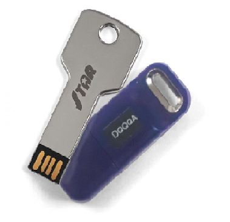

Software a autorský zákon
Program je většinou zbožím, které se prodává na volném trhu tak jako jakékoli jiné zboží. Oproti třeba technickým počítačovým dílům má však program určité specifické vlastnosti. Je chráněn tzv. autorským zákonem, který i počítačový program považuje za autorské dílo. Jeho tvůrci k němu mají autorská práva, podobně jako autoři knih, hudební skladatelé atd.
Počítačový program je dnes asi nejčastěji kradeným zbožím, o primát s ním soutěží nelegálně stažená hudba a kopírované video. Softwarovým firmám kvůli počítačové kriminalitě unikají velké tržby za prodej jejich programů a uživatelé počítače se dopouštějí protiprávního jednání. V zákoně na ochranu autorských práv je jasně uvedeno, že pachatelé takového jednání mohou být odsouzeni k peněžitému trestu i k trestu odnětí svobody na několik let.
Kontrolu legálnosti software provádí specializované oddělení Policie ČR, žádná jiná organizace na to nemá právo. Je-li ve firmě nebo v domácnosti zjištěno užívání nelegálního softwaru, je vyčíslena jeho hodnota a dojde k finančním i trestním postihům odpovědných lidí, ale i firmy.
Možnosti ochrany programů před nelegálním kopírováním. Výrobci programů chrání své programy tak, že se snaží kopírování přímo znemožnit nebo alespoň používají prvky, které usnadní usvědčit pachatele takového činu: zadání licenčního čísla, aktivace přes Internet nebo telefon, hardwarový klíč.
